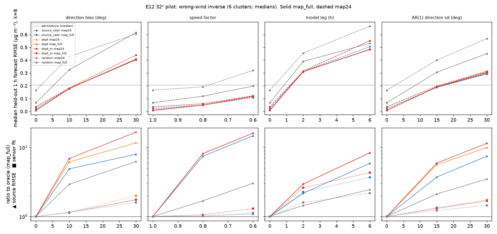

15 E12 Wind mismatch
Simulated passive tracer only; nothing here is evidence about ambient PM2.5 or real deployment.
Question (plan 3). How do errors in the wind given to the inverse model affect source estimates and forecasts? Can wrong source strengths absorb wind errors and still fit the sensors?
Evidence label. Exploratory pilot: 32², upwind operator, 6 clusters, k = 2/4/8. Audited (gate-12-17: pass with conditions; claims below corrected). The 64² run is deferred.
Evidence. - Design note docs/research/wind-mismatch-design.md. - Code src/pravah/uncertainty.py, driver scripts/e12_wind_mismatch.py. - Tables tables/e12-local-*; journal state/experiments/e12.md.
15.1 What we did
- Truth always uses the true wind. The inverse and the forecast use a perturbed wind:
- direction bias of +10° or +30°;
- speed × 0.8 or × 0.6;
- a 2 h or 6 h timing lag;
- AR(1) direction noise with sd 15° or 30°.
- Oracle branch: uses the true wind.
- Isolation check: tests confirm the inverse never sees the true wind outside the oracle.
15.2 Results
The persistence baseline carries the true field at hour t to t + 1 in every grid cell. No sensor network can do that, so “worse than persistence” means worse than an unreachable bound, not worse than a naive forecast.

- Forecast skill collapses quickly. Direction errors of 30° or more, a lag of 2 h or more, and AR(1) noise with sd 30° all make the 1 h forecast worse than persistence (0/6 clusters). A +10° error is about level with persistence. Underestimating the speed keeps skill (6/6).
- Source–transport compensation.
- Source RMSE rises 1.6–16×.
- The fit stays near perfect (ratio 1.01–1.33) only for speed errors, +10° and AR 15°: that is where compensation is deceptive. For a 30° direction error, a lag or AR 30°, the fit ratio rises to 1.6–4.3 and does warn.
- Speed errors bias the strengths low (−15 % for × 0.8, −32 % for × 0.6).
- 95 % coverage of the strengths collapses to 0.00–0.54.
- The fit looks good while the answer is wrong: 298 “deceptive fit” cells.
- Warning sign. Lag-1 innovation autocorrelation rises to 0.13–0.89. It stays weak for speed × 0.8.
- Memory. The large gain from using all past data (+0.6 to +0.77 with the true wind) mostly vanishes under any wind error.
- Placement. Under the wrong wind, D-optimal and near-source are within a few per cent of each other. Rankings built on ratios flip with memory, but that is an artefact of the denominator.
15.3 Limits
- n = 6, upwind numerics and a short calendar.
- The persistence baseline was added after seeing results.
- The 64² plan is in the design note.